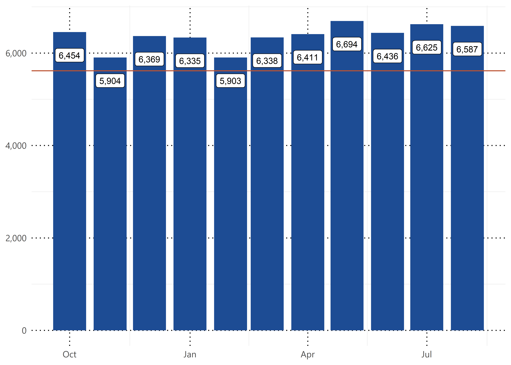
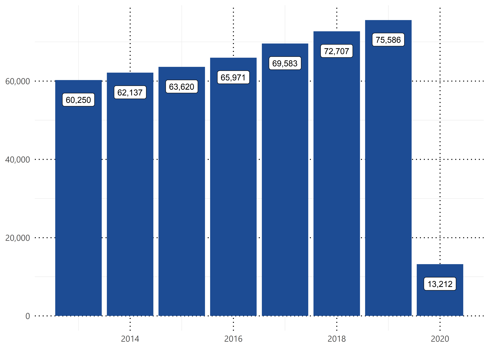
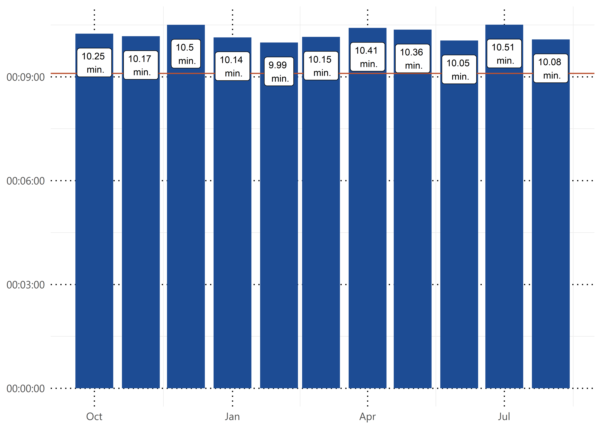
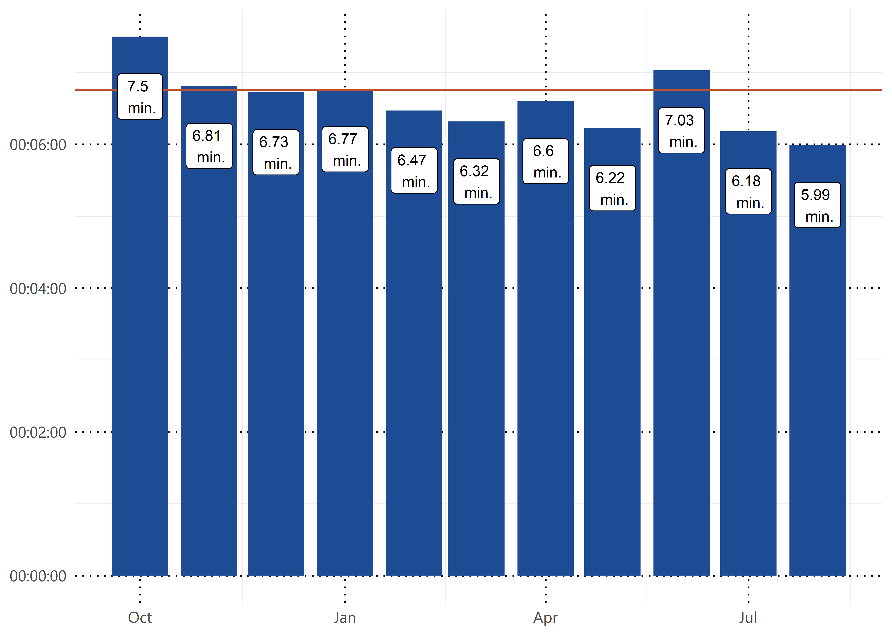

Section: 3 Emergency Services
Guilford County Emergency Services strives to provide the highest standards of service to everyone who lives, works or visits the County in the areas of Fire and Life Safety Services, Emergency Medical Services (EMS), Emergency Management, Fire Inspections and Investigations, and Fire/Hazardous Materials response. Additionally, the Department operates a Public Safety Maintain safe and secure communities through strategically coordinated and professional public safety services. 133 self-contained Fleet Maintenance Facility to assure that all vehicles and equipment in the various divisions are available for immediate response to the maximum extent possible.
3.1 Monthly Call Volume
How many calls does EMS answer each month?

3.2 Yearly Call Volume
How many calls do we receive each fiscal year?

3.3 Yearly Call Volume Per Thousand
Per one thousand population call volume estimates are based on NC OSBM population estimates/projections.
3.4 Overall Average Response Time
This is the overall average response time for all calls and priorities.

Priority Breakdown
3.5 Imminent Life Threat
Goal is to arrive in under 9 minutes, 90% of the time.
3.6 Imminent Life Threat Call Count
3.7 Imminenet Life Threat Average Response Time

3.8 Imminenet Life Threat Percent Under
What percent of the time did we arrive in under 9 minutes?
3.9 Life Threat
Goal is to arrive in under 11 minutes, 90% of the time.
3.10 Life Threat Call Count
3.11 Life Threat Average Response Time
3.12 Life Threat Percent Under
What percent of the time did we arrive in under 11 minutes?
3.13 Potential Life Threat
Goal is to arrive in under 13 minutes, 90% of the time.
3.14 Potential Life Threat Call Count
3.15 Potential Life Threat Average Response Time
3.16 Potential Life Threat Percent Under
What percent of the time did we arrive in under 13 minutes?